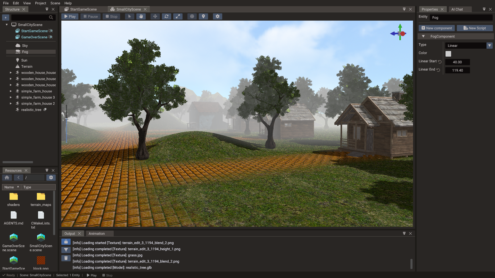
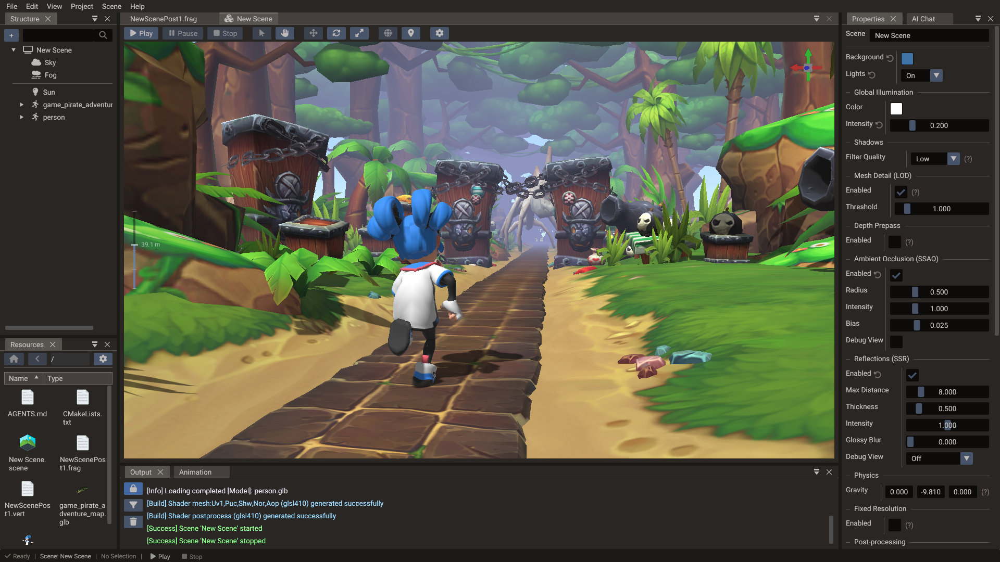
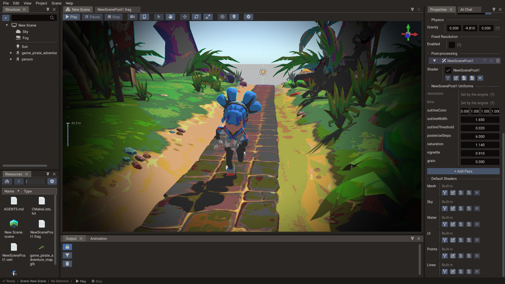

Rendering Pipeline¶
Quantum renders through a flexible pipeline that supports 2D, 3D, UI, and render-to-texture workflows. The same codebase targets OpenGL, OpenGL ES, Metal, Direct3D 11, and WebGPU through a backend abstraction layer.
High-level render flow¶
Each frame, the engine runs the following phases in order:
- Camera update — The active scene camera computes the view matrix and projection matrix.
- Frustum culling — Renderables outside the camera frustum are excluded. Terrain and tilemaps cull below entity level: only the terrain nodes and tilemap chunks that the camera can see are submitted. Terrain foliage is batched into chunks around the camera and culled the same way, with instances scaling in over the last quarter of the layer's draw distance instead of popping. Instanced meshes keep a per-view instance list for the main camera and each shadow atlas slot, so instances outside a view are not submitted to it.
- Depth prepass (optional) — When depth prepass is enabled, opaque meshes write depth only so the colour pass can shade each pixel once. Off by default.
- Opaque pass — Opaque geometry is sorted front-to-back and drawn with depth testing enabled for early-Z efficiency. With mesh detail on, each mesh picks a detail level from its projected geometric error.
- Lighting and shadows — Shadow maps are rendered for each shadow-casting light, then the lighting pass applies directional, point, and spot lights.
- Skybox and IBL — The sky cubemap is drawn (when visible). Environment maps derived from the sky feed image-based lighting (IBL) on meshes that opt in.
- Transparent pass — Objects with blending enabled are sorted back-to-front and
drawn after opaque geometry. Blended submeshes still depth-test, but they do not
write depth in the colour pass, so overlapping translucent surfaces composite instead
of punching holes in each other. A mesh marked transparent (including by
autoTransparency) is skipped by the SSAO depth pre-pass and the SSR G-buffer; shadow maps still render it. A Water surface is drawn inside this pass: transparencies on the far side of it first, then the water, then the rest. - UI pass — UI entities are rendered in screen-space canvas coordinates, on top of the 3D or 2D scene.
- Post-processing — Screen-space effects run over the finished image: SSR composites its reflections, then the scene's post-process chain applies each enabled user pass in order. (Fog is not a post pass — it is computed in the mesh shader.)
Cameras that render to a texture (minimaps, mirrors, water reflections, portals) run this same flow into their own framebuffer before the main view is drawn.
Cameras¶
Three camera projection modes are available:
| Projection | Use | Object |
|---|---|---|
| Perspective | 3D games | Camera with setType(CameraType::CAMERA_PERSPECTIVE) |
| Orthographic | 2D games, isometric | Camera with setType(CameraType::CAMERA_ORTHO) |
| UI | Screen-space canvas | Camera with setType(CameraType::CAMERA_UI) |
Use Camera::setNearClip() and Camera::setFarClip() to tune depth precision. Set a
tight near/far range — a large ratio (e.g. 0.1 to 100 000) causes depth fighting on
distant surfaces. You can also configure the projection in one call with
setPerspective(yfov, aspect, near, far) or setOrtho(left, right, bottom, top, near, far).
Each camera also decides whether it uses the depth buffer at all.
Camera::setDepthTest(false) drops depth testing and depth writes from its colour pass,
so the camera composites renderables in submission order — later draws land on top,
whatever their distance — and the back-to-front sorting of setTransparentSort() is
skipped with it. That is the canvas behaviour a 2D or UI scene wants, so the camera a scene
creates for itself and the ones the editor adds to a 2D scene already have it off; a 3D
camera keeps it on so geometry occludes by depth.
A camera can render to its own texture instead of the screen — see Framebuffers and render-to-texture below.
PBR materials¶
Quantum uses a Physically Based Rendering (PBR) material model with the following texture slots and scalar properties:
| Slot / Property | Controls |
|---|---|
baseColorTexture + baseColorFactor |
Base surface color (albedo) |
alphaMode |
Alpha handling: AUTO, ALPHA_OPAQUE, MASK, or BLEND |
alphaCutoff |
Cutout threshold for MASK materials (default 0.5) |
normalTexture |
Surface micro-detail |
metallicRoughnessTexture + metallicFactor |
Surface reflectivity (0 = dielectric, 1 = metal) |
metallicRoughnessTexture + roughnessFactor |
Highlight spread (0 = mirror-smooth, 1 = fully rough) |
occlusionTexture |
Ambient occlusion darkening in crevices |
emissiveTexture + emissiveFactor |
Self-illuminated areas that ignore lighting |
Metallic and roughness share one texture, following the GLTF convention (roughness in the green channel, metallic in the blue channel).
Alpha is the product of baseColorFactor.a and the base-colour texture's alpha.
ALPHA_OPAQUE forces the result opaque, MASK discards pixels below alphaCutoff, and
BLEND preserves partial alpha for transparent rendering. AUTO keeps the historical
Quantum texture-alpha detection used by editor-created materials. Imported GLTF/GLB
materials preserve their explicit alpha mode. A blended submesh (BLEND, or AUTO when
the texture or factor is translucent) disables depth writes on its colour pipeline.
The MASK test is identical in the lit, shadow/depth, and SSR G-buffer passes. A cutout
therefore casts and contributes to screen-space effects with the same silhouette that
is visible in the colour pass.
Material mat;
mat.baseColorTexture = Texture("textures/rock_albedo.png");
mat.normalTexture = Texture("textures/rock_normal.png");
mat.roughnessFactor = 0.85f;
mat.metallicFactor = 0.0f;
mesh.setMaterial(0, mat); // submesh index, material
Lighting¶
The engine supports three light types plus global illumination:
| Type | Use |
|---|---|
| Directional | Sun / moon — affects the entire scene |
| Point | Omni-directional bulbs, torches |
| Spot | Flashlights, stage lighting, headlights |
Scene ambient light (Scene::setGlobalIllumination) fills shadowed areas with a flat
tint. It is separate from IBL — ambient light affects all lit meshes uniformly, while IBL
adds directional reflections and diffuse fill derived from the sky environment.
Light sun(&scene);
sun.setType(LightType::DIRECTIONAL);
sun.setDirection(Vector3(-0.5f, -1.0f, -0.5f));
sun.setColor(Vector3(1.0f, 0.95f, 0.8f));
sun.setIntensity(3.0f);
sun.setShadows(true);
More lights than MAX_LIGHTS¶
The shaders take MAX_LIGHTS (6) lights at once, but a scene can hold more. Each frame
the lights with an intensity above zero fill those slots: directional lights first, then
the point and spot lights nearest the main camera. A light already in a slot counts as 10%
nearer, so two lights at about the same distance don't swap back and forth as the camera
moves. A light at intensity 0 takes no slot, so switching it off frees one for another
light.
Shadow atlas slots then go to the shadow-casting lights among the selected ones. The shader variants still follow every light in the scene, so a light moving in or out of the selection never rebuilds a shader.
Render-to-texture cameras, mirrors, reflecting water and reflection probes pick the lights nearest to their own position the same way, favouring the ones the main camera uses. A light that only such a view picks has no shadow or spot mask there.
Shadow maps¶
Each shadow-casting light renders a depth map. Engine limits (adjustable at build time):
| Constant | Default | Controls |
|---|---|---|
MAX_LIGHTS |
6 | Max simultaneous lights |
MAX_SHADOW_ATLAS_SLOTS |
9 | Projective atlas slots (one per spot light or directional cascade) |
MAX_POINT_SHADOW_ATLAS_SLOTS |
24 | Point atlas slots, SHADOW_CUBE_FACES (6) per light |
MAX_POINT_SHADOW_LIGHTS |
4 | Shadow-casting point lights (derived from the two above) |
MAX_SHADOWCASCADES |
4 | Cascades for directional CSM |
Shadow edge smoothness is a per-scene setting, Scene::setShadowQuality, with
Percentage Closer Filtering (PCF) kernels of NONE (1 tap), LOW
(3x3, default), MEDIUM (5x5), or HIGH (7x7). The kernel size is uniform-driven, so
changing it applies instantly without shader rebuilds:
Directional and spot shadows sample a depth atlas through a hardware comparison
sampler, so every tap is already filtered across a 2x2 neighbourhood: NONE still
softens edges slightly rather than producing hard ones. The PCF kernel then pairs those
bilinear taps along each axis, so a 3×3 / 5×5 / 7×7 filter costs about a quarter of the
naïve tap count while matching the same weighted result. Point lights keep a packed
colour depth map and stay hard-edged at NONE.
2D lighting and shadows¶
2D scenes use a dedicated forward light path instead of the PBR model: each
Light2D contributes
color · intensity · falloff(distance) and all contributions add on top of the scene's
2D ambient light (Scene::setAmbientLight2D). The result multiplies the sprite's
base color, so the unlit fast path is preserved — a 2D-lit sprite costs far less than a
PBR-lit mesh. Both paths can coexist: a mesh lit by 3D lights in the same scene simply
adds the 2D contribution on top.
A light's optional height places it on a virtual Z above the 2D plane, giving normal
maps a direction to respond to. Sprites, tilemaps, and mesh polygons generate tangents
automatically, so assigning a normal texture to their material is enough.
2D lights ignore the scene's lightState flag — that switch controls only the 3D
lighting pass.
1D polar shadow maps¶
Shadows from Occluder2D components use per-light
1D polar shadow maps: all occluder outlines in the scene are merged into one segment
buffer and rendered into a one-pixel-tall atlas row per shadow-casting light, where the
X axis is the angle around the light and the stored value is the distance to the nearest
occluder. Lit fragments compare their own angle and distance against the row, with a PCF
filter along it for soft edges: the light's shadowSoftness sets the penumbra width and
the scene's shadow2DQuality (NONE / LOW / MEDIUM / HIGH — 1 to 13 taps) sets
how smoothly it is sampled. The tap count is uniform-driven, so quality changes apply
instantly without shader rebuilds.
| Constant | Default | Controls |
|---|---|---|
MAX_LIGHTS_2D |
16 | Max simultaneous 2D lights (and shadow atlas rows) |
The shadow pass renders line segments only (no scene geometry), so it stays cheap even
with many occluders; each shadow-enabled light adds one atlas row at the light's
mapResolution width. Each light's shadow attenuates only that light's own
contribution — ambient light is never shadowed. See
2D Graphics — 2D lighting for the usage guide.
Fog¶

Fog adds atmospheric depth. Two modes are available:
| Mode | Effect |
|---|---|
LINEAR |
Fog blends from linearStart to full density at linearEnd |
EXPONENTIAL |
Density increases exponentially with distance |
EXPONENTIALSQUARED |
Steeper exponential falloff |
Fog fog(&scene);
fog.setType(FogType::EXPONENTIAL);
fog.setColor(Vector3(0.7f, 0.7f, 0.8f));
fog.setDensity(0.02f);
// For LINEAR mode use fog.setLinearStartEnd(start, end) instead of density
Skybox¶
Add a Sky entity (Skybox component) and assign either a single cubemap texture or six cube-face textures. The sky is rendered as an infinite background behind opaque geometry.
SkyBox sky(&scene);
sky.setTexture("textures/sky_cubemap.png");
// or per-face:
sky.setTextures("daysky",
"sky/px.png", "sky/nx.png",
"sky/py.png", "sky/ny.png",
"sky/pz.png", "sky/nz.png");
In the editor, the Sky component also exposes Visible. When disabled, the sky is not drawn in the viewport but still generates IBL environment maps for meshes that use them. Use this when you want reflections and indirect lighting from an environment without showing the sky dome itself (for example, an interior level with a hidden outdoor HDR environment).
Image-based lighting (IBL)¶
When a scene contains a Sky entity with a valid cubemap texture, the engine builds two environment maps from that sky:
| Map | Purpose |
|---|---|
| Irradiance | Diffuse ambient fill — soft colour bounced from every direction |
| Prefiltered specular | Glossy reflections — sharper highlights on smooth (low-roughness) surfaces |
These maps follow the glTF-style split-sum approximation used in modern PBR pipelines. Rough surfaces sample blurrier mips; mirror-like surfaces pick up crisp sky detail.
IBL is per mesh. Each mesh has a Receive IBL flag (default false in new scenes).
Only meshes with this enabled combine punctual lights (directional/point/spot) with the
sky environment. Meshes also need Receive Lights enabled and a valid normal (tangent
space for normal maps).
Typical workflow:
- Add a Sky entity and assign a cubemap (HDR or LDR).
- Select meshes that should reflect the environment (metal, glass, wet stone, etc.).
- Enable Receive IBL on those meshes in the Properties window, or call
setReceiveIBL(true)(Lua:mesh.receiveIBL = true) in code. - Tune Roughness and Metallic on the material — low roughness makes reflections more obvious.
The material preview sphere in the Properties window updates when Receive IBL is toggled, so you can compare lit-only vs environment-lit looks before play mode.
One sky per scene
The render system uses the first Sky component in the scene for both drawing and IBL generation. Keep a single active sky environment unless you know you are replacing it.
Reflection probes¶
IBL reflects one sky environment everywhere, which reads as "outdoors" on every surface. A Reflection Probe captures the environment at a point in the scene and applies it to meshes inside a box-shaped influence volume — chrome in a garage reflects the garage, not the sky. Probe reflections are box-projected (parallax-corrected): reflection rays are projected onto the influence box, so the reflection stays anchored to the room's walls as objects and the camera move, instead of floating at infinity.
The simplest way to add one is the Reflection Probe entry in the Structure panel's create menu. Size its Box Size to the room or area it represents, and enable Receive IBL (plus Receive Lights) on the meshes inside — probes use the same per-mesh opt-in as sky IBL. A Sky is not required: probes supply the specular (reflection) term on their own, while diffuse ambient still comes from the sky irradiance when one is present.
Static and dynamic probes¶
| Mode | Behaviour |
|---|---|
| Static | Uses an authored cubemap when one is assigned; otherwise captures the scene once at load (or when Refresh Probe is pressed) and keeps that result. |
| Dynamic | Re-captures the scene at runtime according to its update policy. |
An authored cubemap is the best-quality and cheapest option: it is GGX-prefiltered and cached like the sky environment, so rough surfaces get correct blurry reflections. Runtime captures have no prefiltered mip chain — rough surfaces approximate the blur with a small angular filter — so prefer static probes with authored cubemaps for strongly rough materials.
Dynamic probes choose when to re-capture with Update:
| Update | When it captures |
|---|---|
| On Load | Once when the scene starts |
| On Move | Whenever the probe entity moves |
| Interval | Every Update Interval seconds |
| Manual | Only when requested — the Refresh Probe button in the editor, or setting needUpdate = true from code |
Runtime captures share a strict budget of one cubemap face per frame: a full refresh takes six frames, and multiple pending probes take turns. Even several dynamic probes therefore cost a fraction of a mirror's full extra scene render per frame — the trade-off is latency, not throughput.
Influence volume and blending¶
| Property | Purpose |
|---|---|
| Box Size | The influence volume's size, scaled by the entity's world scale. The box is world-axis-aligned and centred on the entity. |
| Box Offset | Moves the influence box in the entity's local space. The cubemap is still captured at the entity origin (shown as a gold marker in the viewport when they differ). |
| Blend Distance | Fade band inside the box edges where the probe blends into the sky IBL, hiding the seam at the volume boundary. Runtime blending is limited to the box's smallest half-extent. |
| Intensity | Multiplier on the probe's reflection contribution. |
| Priority | When influence boxes overlap, the higher-priority probe wins; on a tie, the probe whose centre is nearest the mesh wins. |
The engine picks one probe per mesh (using the mesh's world-bounds centre), so keep volumes room-sized rather than object-sized: a mesh is either inside a probe's box or it falls back to the sky environment.
Capture settings¶
| Property | Purpose |
|---|---|
| Cubemap | (static only) Authored six-face cubemap. Leave empty to capture at load instead. |
| Resolution | Capture cubemap face size (16–1024, default 128). |
| Near / Far | Clip planes of the capture cameras. |
| Include Sky | Whether the sky (and scene background colour) appears in the capture. |
Individual meshes stay out of captures with Render in Probes on the Mesh component
(renderInReflectionProbes). Turn it off for geometry wrapped around a probe — a car
body with a probe at its centre, say — which would otherwise fill its own reflection.
The mesh still renders normally everywhere else. Toggling it re-captures every probe in
the scene, because static and non-interval probes keep their baked cubemap until
something invalidates it.
// C++: a dynamic probe covering a 12x6x12 room
ReflectionProbe probe(&scene);
probe.setPosition(0.0f, 2.0f, 0.0f);
probe.setBoxSize(12.0f, 6.0f, 12.0f);
probe.setMode(ReflectionProbeMode::DYNAMIC);
probe.setUpdateMode(ReflectionProbeUpdateMode::MANUAL);
probe.refresh(); // manual re-capture from code
local probe = ReflectionProbe(scene)
probe:setPosition(0, 2, 0)
probe:setBoxSize(12, 6, 12)
probe.mode = ReflectionProbeMode.DYNAMIC
probe.updateMode = ReflectionProbeUpdateMode.MANUAL
probe:refresh() -- manual re-capture from code
With SSR enabled, surfaces lit by a local probe keep their probe reflection and SSR adds on-screen detail on top; only sky-IBL surfaces use SSR's energy-conserving replace path.
Capture scope and limitations
Runtime captures render opaque meshes and (optionally) the sky. Transparent meshes, UI, and particles are skipped. Point and spot shadows are reused in captures, but directional shadow cascades are fitted to the main camera, so their coverage inside a capture can be partial. A probe never appears in its own capture, and captures do not include other probes' reflections (no recursion).
Ambient occlusion (SSAO)¶
Screen-space ambient occlusion darkens creases, corners, and contact areas where ambient light is naturally blocked. Like Godot, Unity, and Unreal, it modulates only the ambient/indirect term (IBL or global illumination) — direct light from your sun, point, and spot lights is left untouched — so it reads as soft contact shading rather than a second shadow.
Each frame the render system runs a small depth pre-pass for the main camera, derives occlusion from a rotated hemisphere kernel, blurs it, and the lit mesh shader multiplies the result into its ambient term.
SSAO is a scene setting:
scene.setSSAOEnabled(true);
scene.setSSAORadius(0.5f); // view-space sampling radius (world units)
scene.setSSAOIntensity(1.0f); // strength (exponent on the occlusion factor)
scene.setSSAOBias(0.025f); // depth bias to avoid self-occlusion acne
In the editor, the same controls live under Scene → Ambient Occlusion (SSAO) in the Properties window, including a Debug View toggle that renders the raw AO buffer so you can tune radius/intensity/bias directly.
| Parameter | Effect |
|---|---|
| Radius | How far samples reach in view space — larger is broader/softer, smaller stays in tight creases |
| Intensity | Darkening strength; raise to make occlusion more pronounced |
| Bias | Pushes samples off the surface to stop flat areas self-occluding (acne) |
Because the effect only touches ambient light, it is most visible with a strong ambient source — raise Global Illumination Intensity or use IBL if SSAO looks too subtle in a scene lit mainly by direct light.
Scope and limitations
SSAO is computed for the main camera; render-to-texture cameras and terrain are currently excluded (terrain would exceed the shader's sampler limit). Normals are reconstructed from depth when SSAO runs alone; when SSR is also enabled SSAO reuses the SSR G-buffer's depth and geometric normals — a single shared geometry pass, and sharper at silhouettes. Enabling SSAO recompiles lit mesh shaders.
Screen-space reflections (SSR)¶

Screen-space reflections add real-time reflections of on-screen geometry — wet floors,
polished metal, glossy surfaces — by marching the camera depth buffer in screen space and
sampling the lit scene colour where a reflected ray hits. Like Godot and Unity, SSR is
energy-conserving: where a ray finds a hit it replaces the surface's
IBL environment reflection rather than adding on top of it, and
where a ray misses (off-screen or occluded) the IBL reflection remains as the fallback. A
local ReflectionProbeComponent is selected by the renderable's bounds center; its captured
reflection remains in the forward colour pass while SSR adds only the confident screen-space
detail. So SSR refines what IBL already provides instead of double-counting it.
When SSR is enabled the main camera first renders a small G-buffer geometry pre-pass — packed depth, view-space normal, roughness/metallic, and base colour — then runs three fullscreen passes. Terrain evaluates its painted layers in this pass too, so a reflective wet patch reflects like one:
- March — reflect the view ray about the G-buffer normal and step it through depth (with a binary-search refine) until it crosses on-screen geometry.
- Glossy blur (optional) — blurs the reflection in proportion to surface roughness, so rough materials get soft reflections while mirrors stay sharp.
- Composite — recomputes the surface's IBL specular and blends the reflection over it with the correct GGX reflectance (including metal tint), writing the final image.
The opaque colour pass is rendered into an offscreen buffer first so the march has a full scene-colour image to sample. SSR therefore requires a framebuffer destination — the editor viewport, a render-to-texture camera, or an engine framebuffer.
SSR is a scene setting:
scene.setSSREnabled(true);
scene.setSSRMaxDistance(8.0f); // max ray length in view-space units
scene.setSSRThickness(0.5f); // depth-compare tolerance (view-space units)
scene.setSSRMaxSteps(48); // linear march sample count (quality vs cost)
scene.setSSRIntensity(1.0f); // reflection strength multiplier
scene.setSSRBlur(0.0f); // glossy blur amount [0..1] (0 = sharp/mirror)
scene.ssrEnabled = true
scene.ssrMaxDistance = 8.0
scene.ssrThickness = 0.5
scene.ssrMaxSteps = 48
scene.ssrIntensity = 1.0
scene.ssrBlur = 0.0
In the editor the same controls live under Scene → Screen-Space Reflections (SSR) in the Properties window, plus a Debug View dropdown for tuning.
| Parameter | Effect |
|---|---|
| Max Distance | How far a reflection ray travels in view space before giving up |
| Thickness | Depth tolerance for accepting a hit — smaller is stricter; larger fills gaps but can smear at contacts |
| Max Steps | March sample count — higher gives sharper/longer reflections at more cost; raise it if reflections miss thin contacts |
| Intensity | Overall reflection strength |
| Glossy Blur | 0 = mirror; raise to blur reflections by surface roughness |
Debug View renders one G-buffer channel full-screen: Reflection (the raw reflection
buffer), Normal, Roughness, Metallic, Albedo, or IBL Specular (the recomputed
environment term SSR blends against — compare it with the in-scene reflections to confirm
the energy match). Off shows the normal render. Per-pixel roughness, metallic, and base
colour come from the material factors and the metallic-roughness / base-colour textures.
Scope and limitations
SSR is screen-space, so it only reflects what is currently on screen: reflections fade out near the screen edges and cannot show off-screen or occluded geometry (IBL fills those in). Thin contact lines where an object meets a reflective surface can leave a small seam — raise Max Steps or lower Thickness to tighten it. SSR runs for the main camera only and is skipped when there is no framebuffer destination.
The reproducible visual fixture --render-feature ssrfallback creates a 32 px dynamic
local probe, captures its six faces in memory, and compares a real 640x360 presented
frame. It is useful for validating the fallback plumbing without changing a project
scene; GPU/driver-specific reference images are still separate release evidence.
Post-processing¶
A scene can run an ordered chain of user fullscreen passes over its finished image. Each pass is a forked shader picked in the editor's Post-processing scene settings; see Custom Shaders — Post-process passes for authoring them.

The chain runs on the scene's active camera, after the opaque, transparent, UI, and SSR passes and before the fixed-resolution upscale. Enabling it redirects the colour pass into an offscreen buffer, exactly like SSR does, and the passes ping-pong between two buffers so a chain of any length costs two render targets. The last pass writes the real destination — the camera framebuffer, the fixed-resolution target, or the screen.
A pass reads the previous pass's output (u_sceneColorTexture) and may also sample depth
(u_depthTexture), the SSR G-buffer (u_gbufferTexture), and ambient occlusion
(u_ssaoTexture). When a pass samples depth while SSR and SSAO are both off, the engine
runs the depth pre-pass for it, so depth-driven effects work on their own.
Values declared in the pass's u_fs_postParams block become editable rows in the scene
settings, and the engine writes resolution and time into that block every frame.
Scripts set them with Scene.setPostProcessUniform, which rewrites the value without
rebuilding the chain. Component shaders have the same mechanism, reserved names
included, through their u_vs_customParams / u_fs_customParams blocks — see
Custom Shaders — Shader uniforms.
Scope
The chain runs for the scene's active camera only — secondary cameras such as mirrors and minimaps skip it, and so does a scene drawn as a layer, where a fullscreen pass would overwrite the scene below. Disabled passes are still exported, so a pass can be turned back on without recompiling.
Framebuffers and render-to-texture¶
A camera can capture its output to a texture instead of the screen — for minimaps,
portals, mirrors, security monitors, or dynamic UI previews. Enable render-to-texture
on the camera and pass its framebuffer wherever a texture is accepted (Mesh, Image,
Polygon, and others have a setTexture(Framebuffer*) overload):
Camera minimapCam(&scene);
minimapCam.setRenderToTexture(true);
minimapCam.setFramebufferSize(512, 512);
// Use the camera's output as a texture on a UI image
Image preview(&uiScene);
preview.setTexture(minimapCam.getFramebuffer());
In the editor, any Texture field can use a camera as its source instead of an image file: click the camera button on the field (or drag a camera entity from the Structure panel onto it). The chosen camera is switched to render-to-texture and its output feeds the slot — the basis for the manual mirror setup below. A camera used this way cannot also be the scene's main camera.
A related mechanism lets the main camera itself render offscreen at a fixed internal resolution that is then upscaled to the window — for pixel-art rendering or GPU performance scaling. That is a scene setting rather than a camera one; see Multiple Resolutions — Fixed resolution.
Mirrors and planar reflections¶
A Mirror turns a flat surface into a true planar reflection — the kind used for mirrors, still water, and polished floors. It is built on render-to-texture: the engine renders the scene a second time from the viewpoint reflected across the mirror plane, then maps that image back onto the surface. For an animated water surface, use Water instead, which has a planar reflection option of its own.
The simplest way to add one is the Mirror entry in the Structure panel's create menu
(or Basic shape → Wall plus a Mirror component). This creates an upright
Wall whose surface normal faces the camera, with a
MirrorComponent already attached. No camera or texture wiring is required — the
component manages its own reflection camera internally.
In code, the Mirror class is the same thing: it derives
from Shape, so it builds its own surface and attaches the component in one step.
To make an existing mesh reflective instead of creating a new one, use
Mesh::setAsMirror(), which works on any flat mesh; pass a normal —
setAsMirror(Vector3(0, 1, 0)) — when the surface isn't a Wall (for example a floor
created with createPlane). Use removeMirror() / isMirror() to toggle or query it.
How it works¶
| Stage | What happens |
|---|---|
| Reflected camera | Each frame the active camera is mirrored across the surface plane (entity position + normal). This preserves the handedness flip a real mirror has, so reflected geometry is rendered with reversed face winding to stay front-facing. |
| Projective sampling | The surface samples the reflection texture by screen position, not by mesh UVs, so the reflection stays correctly aligned regardless of the surface's size or placement. |
| Oblique clipping | The reflection camera's near plane is bent onto the mirror plane (Lengyel oblique projection), so geometry behind the mirror cannot leak into the reflection. The sky is excluded from this clip and reflects normally. |
Lighting in the reflection¶
A mirror shows the side of an object that faces the mirror — usually not the side your key light hits. That side is lit only by whatever indirect lighting the scene has, so a single directional light plus a flat global illumination colour renders it as a washed-out silhouette: with a white ambient, a pale grey ghost of the object.
This is not a mirror artefact — the reflection is rendered with the same lights as the main view. The fix is the scene's indirect lighting:
- Enable Receive IBL on the reflected meshes so their shaded sides take colour from the sky environment instead of a flat ambient. This is the closest match to how objects look in the main view.
- Or add a low-intensity fill light pointing back toward the mirror, so the reflected side gets some direct light of its own.
The same applies to the mirror surface itself: leaving Receive Lights on shades the reflection with the mirror's own material, while turning it off shows the reflected image directly.
The Normal field¶
MirrorComponent exposes a single Normal — the reflecting surface direction in the
mesh's local space (default +Z, matching a Wall), reachable in scripts as
Mirror::normal. It is transformed by the
entity's rotation to build the world mirror plane, so rotating the mirror entity orients
the reflection automatically.
If the reflection looks wrong
The reflection image is the same whichever way the normal points, but the behind-the-mirror clipping depends on its sign. If the reflection is clipped on the wrong side (showing geometry that should be hidden, or going mostly empty), flip the sign of the Normal.
Cost¶
A mirror renders the visible scene one additional time per frame into its own off-screen target — the same inherent cost planar reflections have in every engine. Use them deliberately:
- Prefer one hero mirror / water plane over many.
- A mirror never reflects itself, and reflections of other mirrors are not recursive.
- The reflection target matches the canvas resolution by default; lowering it trades sharpness for performance.
Water¶
A Water entity draws an animated water surface: waves, ripples, reflections, refraction, foam, and a view from below the surface, all from one component. It has its own render path, like the sky, so it needs no mesh, material, or camera wiring. Add one with the Water entry of the Structure panel's create menu, or in code with the Water class:
Every field is listed in Properties — Water component.
Waves and ripples¶
The surface is a grid Size wide (X) and deep (Z), centred on the entity at its height, with Subdivisions cells along each side. It stays level even when the entity is tilted; moving, rotating, or scaling the entity changes the area it covers. Four Gerstner waves displace the grid, all derived from the wave Height, Length, Direction, and Steepness. They are computed in world space, so scaling the entity never stretches them, and longer waves travel faster, as they do on deep water. Steepness is lowered automatically where the crests would fold over.
Small ripples come from a tiling normal map (a built-in one unless you assign your own), sampled in two layers that drift across each other.
The engine evaluates the same waves on the CPU, so Water.getHeight and the buoyancy of 3D bodies follow the surface the next frame draws.
In the editor the waves hold still while the scene is stopped or paused and move during Play. An exported game always animates them.
Reflection and lighting¶
The water reflects the sky (or the background colour when the scene has no sky), mixed by a Fresnel term so it reflects more at grazing angles and shows its own colour when looked into. Scene lights add sun glints and light the water body; with Receive Shadows on and a shadow-casting light in the scene, shadows darken both. The water is fogged like any mesh when the scene has Fog.
Planar Reflection reflects the scene as well, through a reflection camera mirrored across the water plane, like a Mirror, drawn at half the canvas resolution. Only the main camera sees it; render-to-texture cameras, mirrors, and other waters' reflection passes see the water reflect the sky.
Depth effects¶
With Depth Effects on, the water reads the scene depth for shore foam, soft edges where it meets geometry, and a tint that deepens with the water under each pixel. The depth comes from the SSR G-buffer or the SSAO / post-process depth pre-pass when one of them already ran; otherwise the engine adds a depth pre-pass for the water. Only the main camera has the scene depth, so other cameras draw the water without these effects.
Refraction¶
With Refraction on, the scene behind the water shows through it, bent by the ripples and absorbed by the water it crosses: the clearest channel of the shallow colour fades over Depth Fade, the others faster, and the deep colour fills in the scattered light. For it, the main camera splits its colour pass in two:
- Opaque geometry, the sky, and the transparencies on the far side of the water.
- A copy of that image into a scene-copy target.
- The water, sampling the copy, then the remaining transparencies.
With SSR on and a water in view, SSR is composited into the copy, so its reflections land under the water and the water is drawn over them. An exported game drawing straight to the screen renders into an offscreen target while a refracting water is drawn, then copies it to the screen.
Other cameras, and a water with refraction off, show the water alpha-blended over the scene instead.
Caustics¶
With refraction and Depth Effects on, the floor seen through the water carries Caustics: drifting webs of sunlight focused by the waves. The water places them on the floor it finds in the scene depth, so they follow any geometry under it. They are brightest in shallow water, fade as it deepens, and scale with the directional light reaching the surface, so an overcast or night scene shows little of them. Caustics Scale is the world size of one cell of the pattern; set Caustics to 0 to turn them off.
Transparent objects and water¶
The water writes depth, so a wave hides the trough behind it. Transparent objects — blended meshes, particles, and points — are therefore split per camera: an object entirely on the far side of the surface from the eye, within the water's area, is drawn before the water and seen through it; everything else, including an object that crosses the surface, is drawn after it.
Underwater¶
When the main camera goes below the surface, inside the water's area, the surface seen
from below shows the sky only through a bright window overhead, and the rest of the scene
fades into the water with distance, using the same shallow colour, deep colour, and
Depth Fade. With Depth Effects off the fade is even, as if everything were Depth Fade
away. The fade is a fullscreen pass with its own shader, underwater.frag, which can be
forked. Turn Underwater off on a water to
skip it; while editing, the viewport's Disable underwater setting keeps the editor
camera's view clear.
Water exclusions¶
A WaterExclusion keeps the water out of a volume, like a boat floating with its floor below the waterline. The water shader tests the world position of each fragment against the volumes over the water, so the cut follows the waves, shows in every view, including reflections and render-to-texture cameras, and leaves the waves in front of the boat drawn. A box or sphere is tested exactly. A hull, the convex hull of the entity's meshes, is kept as a 128 × 128 map of its bottom and top seen from above, one layer per hull in a shared texture array: sloped sides come out within a few millimetres and straight walls within a texel. Each water draw takes the 8 volumes nearest to the camera.
The same volumes stop the underwater fade for a camera inside them and the buoyancy of the bodies inside them.
Cost¶
| Feature | Extra work |
|---|---|
| Grid | (Subdivisions + 1)² vertices, displaced in the vertex shader |
| Planar Reflection | The visible scene drawn once more, at half resolution |
| Refraction | One copy of the scene per frame, and the main pass split around it |
| Depth Effects | A depth pre-pass, only when SSAO, SSR, and post-process depth are all off |
| Underwater | One fullscreen pass while the camera is below the surface |
| Water Exclusion | A volume test per water fragment, with one texture lookup inside a hull's bounds |
Each water compiles its own shader variant from the features it uses, and the scene can set a default water shader like it does for other types.
Shaders¶
Shaders are authored in GLSL and transpiled by the shader builder for each supported backend. Shader data files are generated at export time.
Each renderable type (Mesh, UI, Points, Lines, Sky, Water) has a built-in shader. In the editor you can fork any of them — per component, or as a scene-wide default for that type — and edit the GLSL; the engine keeps driving the variant system, lighting, and the shadow/depth/G-buffer passes. A Mesh can fork its depth shader too, so a colour fork that displaces vertices or discards keeps its shadows in step. A shader set on the component wins over the scene default, which wins over the built-in. The same fork mechanism provides the scene's post-process passes. See Custom Shaders.
Built-in skinned variants bind bone matrices through a storage buffer (sbo_skinning)
on Vulkan, Metal, and Direct3D 11, or through an unfilterable RGBA32F bone texture
sampled with texelFetch on OpenGL / OpenGL ES. The colour, depth/shadow, and G-buffer
passes share that path, so large skeletons are not capped by a uniform-block size. Shader
reflection keeps the backend-specific storage-buffer bindings, which Metal requires for
validation. The CPU array is still sized by MAX_BONES (default 96); see
3D Graphics — GLTF compatibility and limits.
The editor revisions its compiled shader cache when this built-in shader interface
changes, so an updated editor does not reuse incompatible older skinned variants.
GPU pipeline creation can be deferred by the graphics backend. If a pipeline variant fails creation or validation, Quantum skips that draw instead of submitting its uniform, binding, and draw commands against the failed handle. Diagnose the original pipeline creation message in the Output panel; the dependent validation-error cascade is suppressed.
Supported graphics backends (GraphicBackend enum):
| Backend constant | Target |
|---|---|
GLCORE |
Desktop OpenGL 3.3+ |
GLES3 |
OpenGL ES 3 (Android, WebGL2) |
D3D11 |
Windows Direct3D 11 |
METAL |
macOS and iOS Metal |
WGPU |
WebGPU |
GPU instancing¶
Draw large numbers of identical objects (trees, rocks, enemies) efficiently with mesh instancing. Each instance has its own transform (and optional color and texture region) stored in a GPU buffer, eliminating per-draw CPU overhead:
mesh.createInstancedMesh();
mesh.setMaxInstances(500);
for (int i = 0; i < 500; i++) {
mesh.addInstance(Vector3(i * 2.0f, 0, 0), Quaternion(), Vector3(1, 1, 1));
}
Instances can be modified later with updateInstance(index, ...) and read back with
getInstance(index). Instance transforms may rotate, mirror, and scale non-uniformly;
normals and tangents are transformed correctly, so a tree stretched taller is still lit
as a tree.
Instancing uses geometry on the same entity as the instanced mesh. Multi-node GLTF models that keep child mesh entities will not draw instances until you merge static model meshes into the root (or build instances on a single-mesh entity / basic shape). In the editor, the Instanced Mesh panel warns when a model still uses the child-mesh layout.
Distance fade¶
Distance Fade shrinks instances to nothing between Fade Start and Fade End,
both measured from the camera in the entity's model space. It is a vertex-shader scale,
not a dither: the engine has no temporal anti-aliasing, so a stipple fade reads as dots
on thin foliage. Turning it on selects a different shader variant (Ifd), while the two
distances are plain uniforms that can be dragged freely.
On the built-in triangle mesh shaders — no custom colour or depth fork, no scene default mesh shader, and SSR off — instances past Fade End are also dropped from the draw list, so they cost neither vertices nor a fragment. Custom shaders and the SSR G-buffer still draw every instance and rely on the vertex scale alone.
Fade is what keeps a field of instances from popping at the edge of its draw distance;
the terrain's foliage layers set it up for themselves from each
layer's draw distance. From script, Mesh::setDistanceFade / setFadeRange expose the
same controls as the Instanced Mesh panel.
Culling granularity¶
An instanced entity is culled as a whole: its bounds are rebuilt from its instances, so one entity holding a whole forest has a bounding box covering the map and is drawn in full every frame. Splitting the same instances into one entity per region — the terrain foliage uses chunks around the camera — gives the frustum something to reject.
That trades against batch size, because instancing batches per model and per entity. A region that offers every model variation ends up with two or three instances per draw call. Picking a small subset of the palette per region, deterministically from its coordinates, keeps the batches large while the whole map still uses every model.
Cull Instances (default on) then filters inside the entity. The main camera and each shadow atlas slot keep their own instance list: only instances that intersect that view's frustum are uploaded, nearest first and grouped by detail level. Mirrors and other render-to-texture cameras still draw the full batch. Turn culling off when a shader moves instances away from the bounds the CPU computed — those instances would otherwise vanish as soon as their authored positions leave the frustum. With it off the entity is not frustum-culled as a whole either, so the batch always reaches the GPU.
Cull Distance (default 0 = unlimited) drops instances farther than that many world
units from the main camera from the same culled views, shadow slots included. Unlike
distance fade it is a hard cut that keeps instances full-sized until
they disappear, and it works with custom shaders and the SSR G-buffer. Hide the pop with
fog or a distant representation. It follows Cull Instances, so turning that
off disables the distance too.
Mesh detail (LOD)¶
Meshes can drop geometric detail as they recede, so a distant prop costs fewer triangles than the same mesh at the camera. It is off by default: every mesh draws its full geometry and no levels are built. Turning the scene's Enabled switch on is the only step needed; each mesh then follows it unless its Detail Levels is turned off.
While the switch is on, the engine builds extra index ranges with
meshoptimizer for each mesh —
asynchronously on the thread pool, keyed by a hash of the geometry so identical meshes
share the result — and turning it off frees their GPU buffers. Level 0 is the source;
up to three simplified levels keep roughly 50%, 25%, and 12.5% of the source triangles,
stopping early when a mesh cannot shrink further. MAX_MESH_LODS (default 4) is the
compile-time cap.
A detail level is chosen from projected geometric error: the simplification's
deviation from the source, in mesh units, is compared with how many world units one
screen pixel spans at that distance. The scene's Threshold is how many pixels of
error a simplified mesh may show (default 1). Shadow maps use a fixed two-texel budget
instead, so casters stay sharp enough for the PCF filter.
| Control | Default | Effect |
|---|---|---|
Scene::setMeshLodEnabled |
false |
Master switch; while off no levels are built |
Scene::setMeshLodThreshold |
1.0 |
Allowed screen-space error in pixels; lower keeps more detail |
Mesh::setLodEnabled |
true |
Per-mesh opt-out (follows the scene switch); toggling it reloads the mesh |
Mesh::setLodBias |
1.0 |
Above 1 keeps detail longer; below 1 drops it sooner |
Terrain and tilemaps keep their own LOD and are not simplified this way. Detail levels apply to the main camera and to shadow maps; mirrors and other render-to-texture cameras draw the source mesh. Instanced meshes pick a level per instance in those same views.
In the editor the scene controls live under Scene → Mesh Detail (LOD) when nothing is selected, and each mesh has Detail Levels / Detail Bias on the Mesh component.
scene.setMeshLodEnabled(true);
scene.setMeshLodThreshold(1.0f);
mesh.setLodBias(1.5f); // keep this hero prop sharper than the default
statue.setLodEnabled(false); // this silhouette must never change
scene.meshLodEnabled = true
scene.meshLodThreshold = 1.0
mesh.lodBias = 1.5
statue.lodEnabled = false
Depth prepass¶
An optional depth-only pass runs on the main camera before the opaque colour draws, writing the same depth the colour pass will test. Later fragments fail the depth test instead of running the lit mesh shader, so each pixel is shaded once. That pays off when many opaque surfaces overlap in screen space — dense foliage, layered interiors — and costs an extra geometry pass when they do not.
The setting is off by default. Toggling it reloads meshes, because the prepass pipelines are built with each mesh. It runs only for the main camera and only while that camera has depth testing on; 2D and UI cameras skip it. A mesh whose colour shader is forked without a matching depth fork is left out of the prepass, so its vertices stay consistent with the colour pass.
This is separate from the small depth target SSAO (and some post-process passes) already build when they need a depth texture. Enabling the scene prepass does not replace those.
In the editor the toggle is Scene → Depth Prepass. From script:
Performance guidelines¶
| Area | Guideline |
|---|---|
| Draw calls | Reduce with instancing, atlases, and shared .material files |
| Mesh LOD | Turn scene Mesh Detail on for triangle-heavy scenes; raise Threshold or lower a mesh's Detail Bias to drop triangles sooner |
| Instance culling | Keep Cull Instances on unless a shader moves instances off their bounds; split huge batches into regional entities |
| Depth prepass | Enable for heavy opaque overdraw (forests, interiors); leave off when most pixels are shaded once already |
| IBL cost | Environment maps are rebuilt when the sky texture changes; disable Receive IBL on distant or unimportant meshes |
| Shadow casters | Limit shadow-casting lights; cascade only when needed; turn off Cast Shadows on grass-scale terrain foliage |
| Transparent objects | Keep transparent draw counts low; sort correctly |
| Tilemaps | Chunk culling is automatic, so map size costs little; a tilemap is capped at 16 383 tiles |
| Mobile shaders | Simplify PBR (skip normal maps, lower cascade count) |
| Render targets | Minimize framebuffer resolution for off-screen effects |
| Mirrors | Each mirror re-renders the scene once per frame; keep one hero reflection and lower its target resolution if needed |
| Water | Keep Subdivisions as low as the waves allow; Planar Reflection re-renders the scene and Refraction copies it once per frame |
| SSR | Adds a G-buffer geometry pass plus fullscreen march/blur/composite passes; lower Max Steps for cost, and it shares its geometry pass with SSAO when both are on |
| Textures | Use compressed formats (ETC2/BC) on mobile/desktop respectively |
The editor footer reports FPS, frame time, draw calls, and triangles for the last drawn
frame. Engine::getFrameStats() returns the same counters from C++. For a repeatable
capture with VSync forced off, use the
benchmark command.